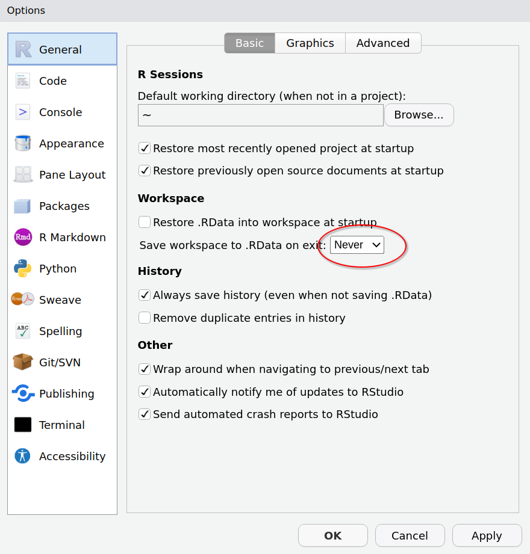
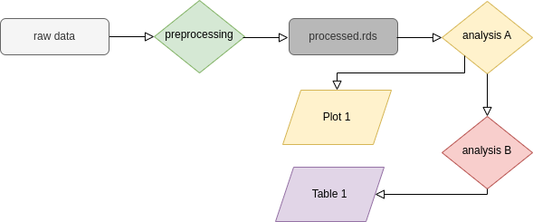
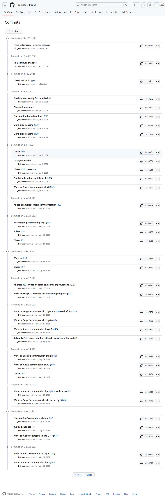
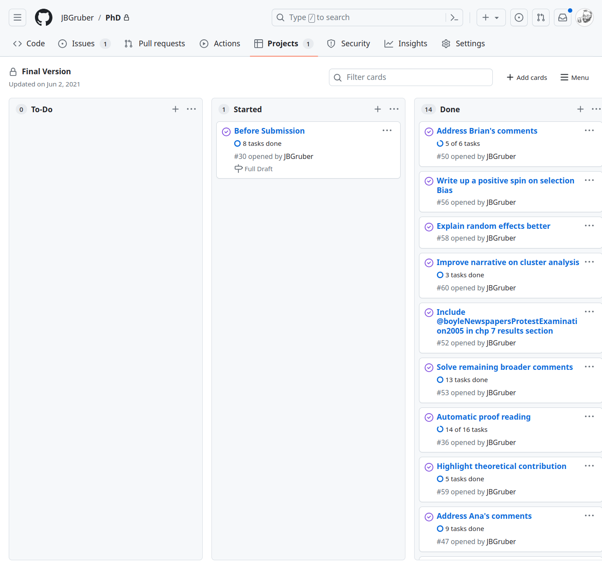

plenary_speeches_raw <- rio::import("data/ParlEE_AT_plenary_speeches.csv")Workshop Automated Content Analysis
Session 6: Big Data Projects – Some Tips
Introduction
I was asked to provide some tipps for big data projects. However, big data projects are not really different from other R projects, so below is just my general take on best practices for R projects.
Projects and relative paths
Specifically RStudio projects are a good way to organise your data, analysis scripts and academic output. This does not change your workflow dramatically, but makes your projects portable (and easier to back up). When working in a project, you can reference data by it’s relative position to the project’s main folder. This will mean that if the folder is copied to a different location, all your code will still run. The best example is the project we are in now.
This will work on your computer:
This won’t, even thougg it works on my machine:
plenary_speeches_raw <- rio::import("/home/johannes/GitHub_sync/aca_vienna/data/ParlEE_AT_plenary_speeches.csv")RStudio projects are not really necessary for this, especially given that Quarto sets the working directory of your documents to it’s source location by default. But the idea of keeping everything together can save you a lot of time otherwise spent on debugging issues.
The worst default setting in RStudio

The default setting to ask whether to save the current session is horrible. It eventually leads to you clicking yes, save the data and to the creation of a file called .Rdata. This file is loaded whenever you open RStudio! This makes RStudio slow and can lead to unexpected behaviour, even when you delete all objects in your environment with rm(list = ls()).

Exercises
- Change that setting NOW and look for the
.Rdatain your project and home directory.
Literate programming
When analysing data in R, a cornerstone of a good workflow is documenting what you are doing. The whole point of doing data analysis in a programming language rather than a point and click tool is reproducibility. Yet if your code does not run after a while and you don’t understand what you were doing when writing the code, it’s as if you had done your whole analysis in Excel!
This is where literate programming has a lot of advantages:
- Enhanced Documentation: Literate programming combines code and documentation in a single, integrated document. This approach encourages researchers to write clear and comprehensive explanations of their code, making it easier for others (and even themselves) to understand the working of the code, (research) design choices, and logic.
- Improved Readability: By structuring code and documentation in a literate programming style, the resulting code becomes more readable and coherent. The narrative flow helps readers follow the thought process and intentions of the programmer, leading to improved comprehension and maintainability.
- Modular and Reusable Code: Literate programming emphasizes the organization of code into coherent and reusable chunks as they writers come to think of them similar to paragraphs in a text, where each chunk develops one specific idea.
- Collaboration and Communication: Literate programming enhances collaboration among developers by providing a common platform to discuss, share, and review code. The narrative style fosters effective communication, allowing team members to understand the codebase more easily and collaborate more efficiently.
- Extensibility and Maintenance: Well-documented literate programs are typically easier to extend and maintain over time. The clear explanation of choices and functionality helps yourself and others in the future to make decisions about modifications, enhancements, and bug fixes.
- Reproducibilty and accountability: when you save rendered output of an analysis, you know exactly how a table of plot was created. If there are several versions, you can always turn to the rendered document and check which data, code and package versions were used to do your analuysis (at least when documents were written in a specific way.
Quarto (and its predecessor R Markdown) were designed to make it easy for you to make the most of these advantages. We have already been using these tools throughout the workshop and I hope this made you more familiar with them.
Exercises
Use the function
report_template()from my package jbgtemplates to start a new reportAdd some simple analysis in it and render
Prototyping
Many large scale analyses take a lot of time. To counter that, you should move expensive computations into their own document and make sure you load only the data that is needed in the beginning and save the required results in the end (for the most part with saveRDS and readRDS, but more below). However, before you actually start rendering a document with such a step, you should prototype your analysis to make sure everything runs without an error. There is nothing worse than not saving the result of a computation that took hours or days to complete! This will usually also give you an idea of how long you can expect the rendering to take.
---
title: "My Document"
params:
trototype: true
---params$prototype[1] TRUEdat <- mtcarsif (params$prototype) {
set.seed(1)
dat <- dat |>
dplyr::sample_n(size = 20)
}nrow(dat)[1] 20quarto::quarto_render("6._Good_Workflows.qmd", execute_params = list(prototype = "false"))Memory Management
Often when working with larger datasets, the available memory of your computer becomes an issue. In fact, the label “big data” often refers to datasets larger than your memory. In this case, there are three approaches:
- Divide your analysis into more documents. This way, your computer does not have to also hold the results of a previous step. Some of my scripts load the data, make one computation and save the result. Because it would be otherwise impossible to make the calculation
- Chunk your analysis. Often, you can perform analysis or pre-processing on one subset of the data after the other and combine the results.
- Get better hardware or use cloud computing. Both these options are often expensive, but if there is no other way, you can move your analysis to AWS, Google or Azure (check out some cool packages that makes this a lot easier here)
Let’s have a look at 2. since it might not be entirely clear.
library(arrow)
library(tidyverse)
plenary_speeches_con <- open_dataset(sources = "data/ParlEE_AT_plenary_speeches.csv",
format = "csv")
plenary_speeches <- plenary_speeches_con |>
mutate(date = lubridate::dmy(date)) |>
filter(date >= "2017-11-09",
date <= "2019-10-22") |> # select XXVI. Gesetzgebungsperiode: 09.11.2017 – 22.10.2019
group_by(date, speechnumber, speaker, agenda, party, chair) |> # go from sentence to speech level
collect() |>
summarise(text = paste(text, collapse = "\n\n"), .groups = "drop") |>
mutate(speech_id = row_number())object.size(plenary_speeches_con)
object.size(plenary_speeches) |>
format(units = "MB")plenary_speeches_raw <- rio::import("data/ParlEE_AT_plenary_speeches.csv")
object.size(plenary_speeches_raw) |>
format(units = "MB")library(tidytext)
dates <- plenary_speeches_con |>
mutate(date = lubridate::dmy(date)) |>
select(date) |>
distinct(date) |>
collect() |>
pull(date)
out_csv <- FileOutputStream$create("data/plenary_speeches_tidy.csv")
for (i in seq_along(dates)) {
message("working on: ", dates[i])
plenary_speeches_con |>
mutate(date = lubridate::dmy(date)) |>
filter(date == dates[i]) |>
select(speechnumber, text) |>
collect() |>
unnest_tokens(
output = "word",
input = "text",
token = "words"
) |>
write_csv_arrow(sink = out_csv)
}
out_csv$close()Exercises
- read the help for
write_featherand think about why it is useful for text analysis projects
Make Files
GNU Make is a tool which controls the generation of executables and other non-source files of a program from the program’s source files. It implements a paradigm that can be very useful for data science projects:
- The make file contains the order in which results are built from the raw files: that is data and analysis scripts
- When running the make command, make checks which files are up to date and which ones need (re-)building
Make files can help you keep track of your ongoing projects by making sure all files that depend on each other are up to data. You can check out the {targets} R package, which implements some advanced control over your projects and some nice visualisations. But the basic idea is simple:

Say you found an issue in your pre-processing. You fix the issue and re-run the pre-processing script. But what else needs to be fixed? From the perspective of make, everything in the flowchart above after the pre-processing step needs to be rebuilt. If you name your files in a sensible way and record the order of things, that should be no problem. You can use a little functions that implements make-like processing
make_quarto <- function(files,
destfiles = NULL,
output_ext = ".html",
...) {
if (is.null(destfiles)) destfiles <- paste0(tools::file_path_sans_ext(files), output_ext)
# the oldest file should be the first source file, I record the first destfile, since it should be newer
t <- file.info(destfiles[1])$ctime
for (i in seq_along(files)) {
if (
# render file if source is newer than destination
isTRUE(file.info(files[i])$ctime >= file.info(destfiles[i])$ctime) ||
# or if output is NOT newer than previous destination file
!isTRUE(file.info(destfiles[i])$ctime >= t)
) {
cli::cli_progress_step("Making {destfiles[i]}.")
quarto::quarto_render(
input = files[i],
output_file = destfiles[i]
)
cli::cli_progress_done()
} else {
cli::cli_inform(c("v" = "{destfiles[i]} already up to date."))
}
t <- file.info(destfiles[i])$ctime
}
}This is very barebones compared to the targets package, but I never really needed any of the other functions. Mostly I have been using the actual GNU make, but it’s syntax is quite different from other programs and it is not installed by default on Windows.
Exercises
- run the above
make()command on the files in this project - What would you need to do so that so that this command would render files in the correct order
make_quarto(list.files(ist.files(pattern = "\\.qmd$")))?
Git some Version Control
Git is an extensive application and too much to go through. But you do not need all the functionality to make efficient use of it’s main promise: keeping track of what is happening in your projects and giving you the ability to revert to an older state of your project.

This screenshot shows the last months of my PhD, when I was furiously working on integrating comments from different people. Not only helped git to show me my progress nicely, I also did not have to worry about accidentally deleting anything that might still prove valuable. Especially towards the end, I often removed sections or copied them to other chapters. Whenever I could not find a specific section, I went back to the last commit when I could still remember where it was.
Additionally, GitHub offers some nice features to organise and plan projects around issues.

Here you can note down remaining problems and keep track of your progress. It keeps your head free for other things!
Exercises
- Fork this repository by navigating to https://github.com/JBGruber/r-text-analyse-vienna and clicking this button:
- Clone your new project in the same way as described in the README
- Make some changes to the files (e.g., by copying your notes from the current project)
- use the Git Pane in RStudio stage, commit and push your changes